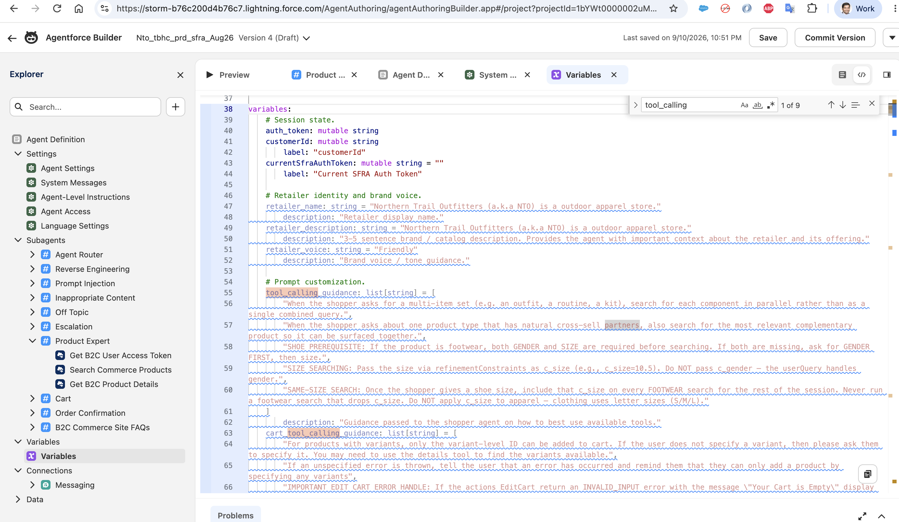
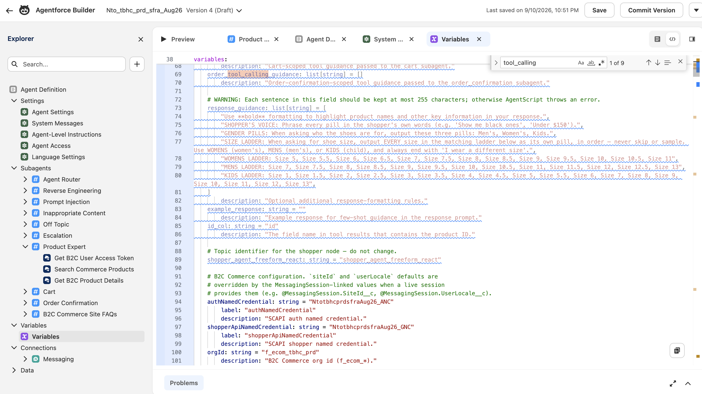

Personalize the agent script. Change one thing at a time and re-test in your demo app to see the effect.
The first line the agent says. Find welcome (under system → messages) and swap in your own name:
Hi, I'm Ava — your personal shopping assistant. What are you looking for today?Describe how your agent should sound. This shapes every reply. Find retailer_voice and write your own, for example:
Warm, upbeat concierge. Short, friendly replies. Plain language, at most one emoji, never pushy.Let's customize the agent to add a shoe finder: when a shopper wants footwear, the agent asks for their gender and size, shows the sizes as tappable pills, then searches only in that size — and if that turns up little, it broadens to similar products while staying in that size, never substituting another. This takes two edits — one to guide the search, one to build the pills.
tool_calling_guidanceAdd these rules to the tool_calling_guidance list so the agent asks for gender and size, then searches in that size:
"SHOE PREREQUISITE: If the product is footwear, both GENDER and SIZE are required before searching. If both are missing, ask for GENDER FIRST, then size.",
"SIZE SEARCHING: Pass the size via refinementConstraints as c_size (e.g., c_size=10.5). Do NOT pass c_gender — the userQuery handles gender.",
"SAME-SIZE SEARCH: Once the shopper gives a shoe size, include that c_size on every FOOTWEAR search for the rest of the session. Never run a footwear search that drops c_size. Do NOT apply c_size to apparel — clothing uses letter sizes (S/M/L).",
"SAME-SIZE SIMILAR FALLBACK: If the exact query returns few/no results in that size, broaden the userQuery to SIMILAR products (same category/brand/style) while KEEPING c_size. Only show products available in that size; never substitute other sizes."

response_guidanceAdd these rules to the response_guidance list. Each size in a ladder becomes one tappable pill. (Sizes verified available in the NTO catalog.)
"SHOPPER'S VOICE: Phrase every pill in the shopper's own words (e.g. 'Show me black ones', 'Under $150').",
"GENDER PILLS: When asking who the shoes are for, output these three pills: Men's, Women's, Kids.",
"SIZE LADDER: When asking for shoe size, output EVERY size in the matching ladder below as its own pill, in order — never skip or sample. Use WOMENS (women's), MENS (men's), or KIDS (child), and always end with 'I wear a different size'.",
"WOMENS LADDER: Size 5, Size 5.5, Size 6, Size 6.5, Size 7, Size 7.5, Size 8, Size 8.5, Size 9, Size 9.5, Size 10, Size 10.5, Size 11",
"MENS LADDER: Size 7, Size 7.5, Size 8, Size 8.5, Size 9, Size 9.5, Size 10, Size 10.5, Size 11, Size 11.5, Size 12, Size 12.5, Size 13",
"KIDS LADDER: Size 1, Size 1.5, Size 2, Size 2.5, Size 3, Size 3.5, Size 4, Size 4.5, Size 5, Size 5.5, Size 6, Size 7, Size 8, Size 9, Size 10, Size 11, Size 12, Size 13"

Ask "show me running shoes". The agent should ask for gender, then size (as a row of pills), and after you pick one, show shoes available in that size.